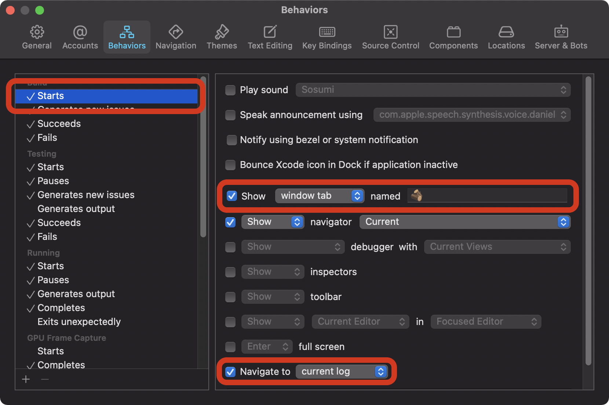
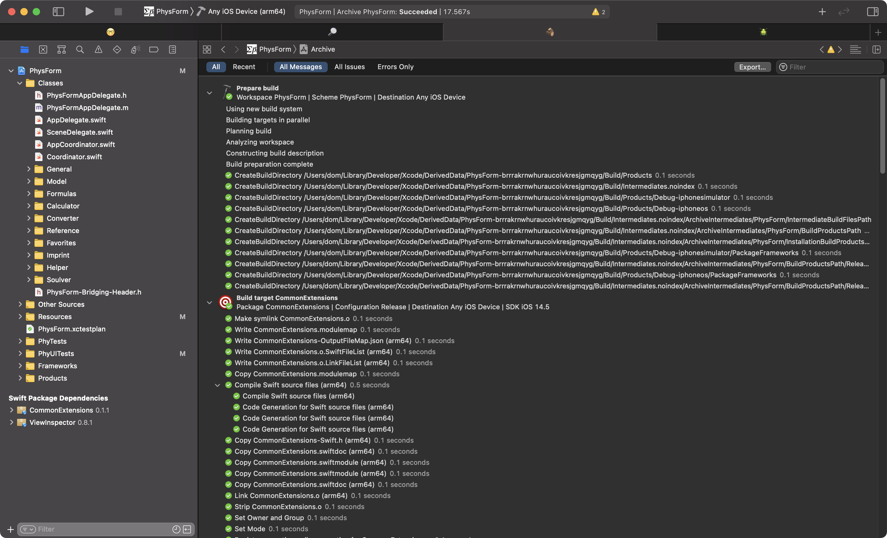
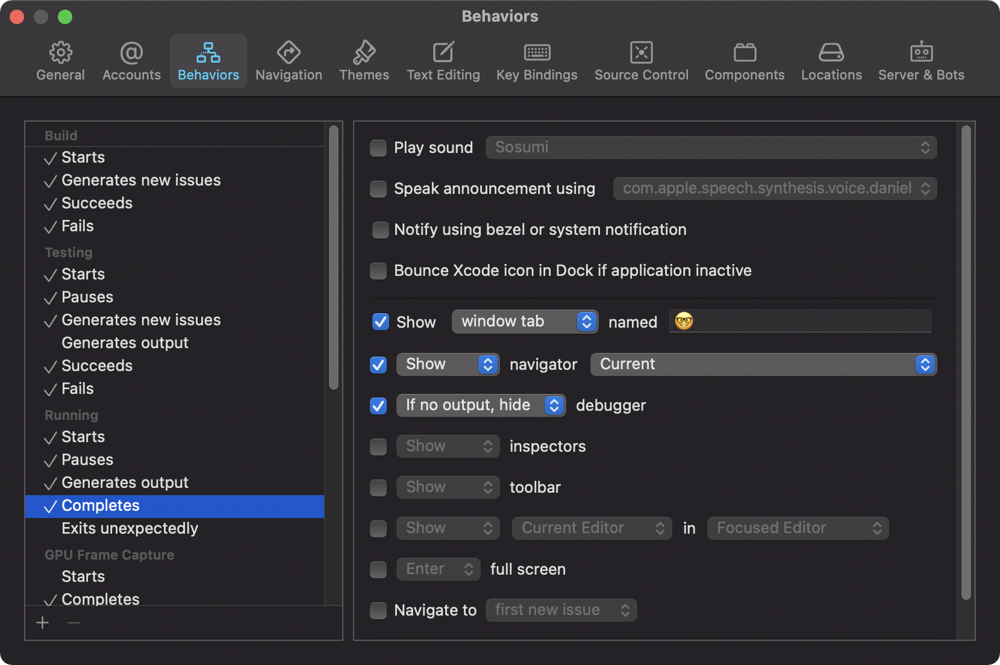

Automatically Switch to Build Log
One often overlooked feature of Xcode are Behaviors. I will go into more detail about Behaviors and how I used them in a future post.
In this post I show you, how to setup a Behavior that switches to a new tab when building starts and shows the build log in that tab.
First open the Behaviours settings in Xcode at ‘Xcode / Behaviors / Edit Behaviors…’. Select ‘Build / Starts’ and check the check box at ‘Show window tab’ and put in the name 🪵. Then check the box at ‘Navigate to current log’.
With this Behavior, Xcode switches to the 🪵 tab when building starts and shows the build log in that log.
You should add a Behavior that switches back to the normal development tab, when building finishes. My development tab is named 🤓 so the Behavior looks like this:
